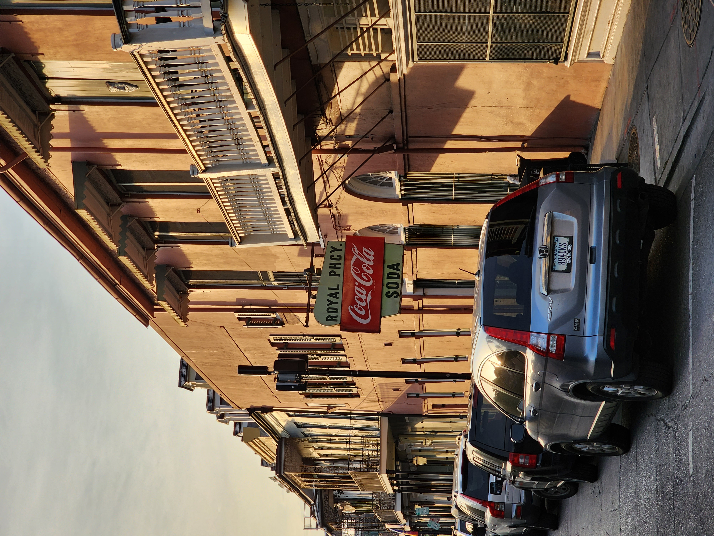
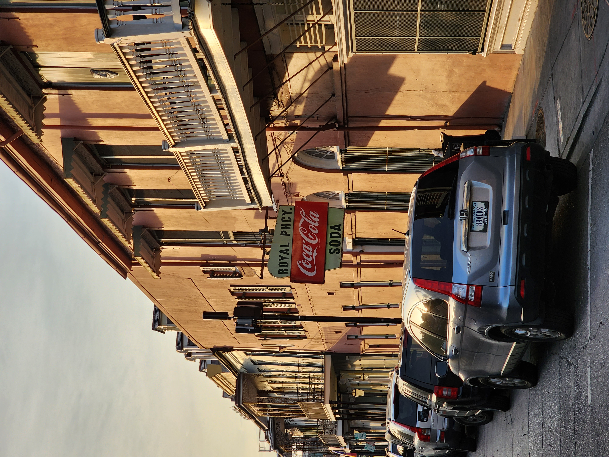

.png)
About Me
My name is Aubrey Geary, and I'm an Aerospace Engineering student at Embry-Riddle Aeronautical University. While much of my time is spent in lecture halls, I still make time for hobbies like photography and film development, electronics, and rocketry! I am in the final year of my Bachelor of Science Degree in Aerospace Engineering with a focus in Astronautics and a minor in Applied Mathematics.
Current Work
Right now, I'm working on 3 projects: Computational Fluid Dynamics Research, Space Situational Awareness Research, and this website! While I wrap up my CFD research, I'm also designing my own CubeSat which is shown in high-level detail in the Portfolio tab.
Hobbies
National Association of Rocketry Level 1 Certification
As was seen in the video clip above, I have completed my Level 1 High-Powered rocketry certification! I built, and successfully launched and retrieved my rocket without any damages or faults.
With photography as a hobby, you accumulate mass amounts of data in images and videos. Just a few of my favorite, more recent images are displayed below.
 
